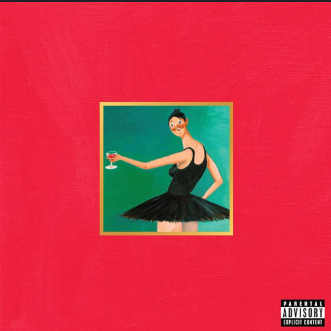

Kanye West
L'artiste qui réinvente les limites de la créativité musicale et visuelle.
Biographie
Né en 1977, Kanye West est un artiste multidisciplinaire ayant marqué la musique, la mode et la culture populaire mondiale. De ses débuts comme producteur pour Jay-Z à sa carrière solo révolutionnaire, il a constamment défié les conventions et redéfini les standards de l’industrie.
En apprendre plus sur lui.Albums Iconiques

The College Dropout
Un premier album classique avec des paroles introspectives et des beats révolutionnaires.

My Beautiful Dark Twisted Fantasy
Une pièce maîtresse mêlant introspection et grandeur baroque.
Vision Artistique
Kanye West ne suit pas les tendances – il les crée. Son audace artistique et son esprit novateur l'ont rendu incontournable dans la musique, la mode et bien au-delà.